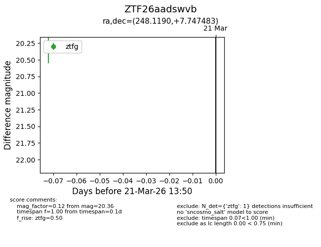
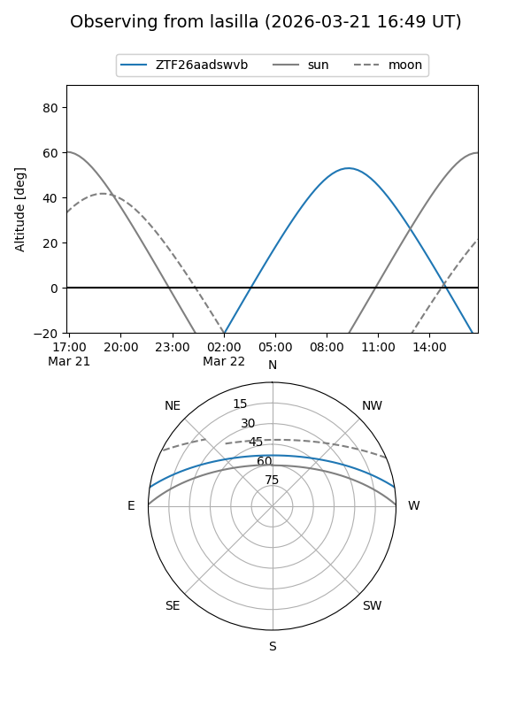
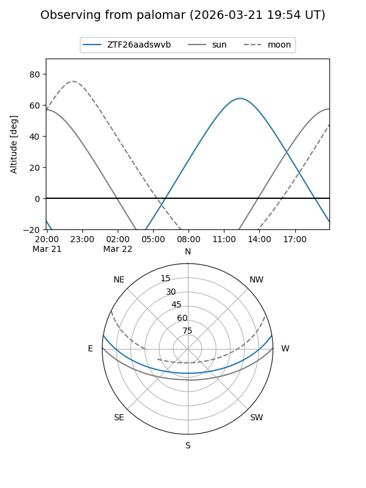

ZTF26aadswvb
Target ZTF26aadswvb at 2026-03-21 13:52
Aliases and brokers:
FINK: link
Lasair: link
ALeRCE: link
alt names
ZTF26aadswvb (ztf,fink_ztf)
Coordinates:
equatorial (ra, dec) = 248.1190,+7.74748
equatorial (HMS+DMS) = 16:32:28.57,+07:44:50.94
galactic (l, b) = (23.3470,+34.33348)
Flags:
Photometry:
last ztfg=20.36
1 ztfg detections
Lightcurve

Visibility


Additional plots